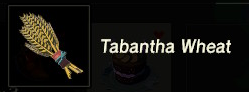
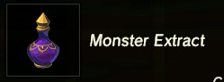

One of my favorite dishes in Breath of the Wild. It is said that once you get a taste of this cake you will never forget it sweetness.
And they also say that it's a dangerous dish that will make your head fuzzy and may even motivate you to scheme some mischevious plans.



You can find some of these items in the wild, but items like the monster extract and goat butter, have to be bought in a store. You can find the first three items at your favortie local (and only one) Rito Village store.
The last item is a bit tricky to find. You will have to find a guy named Kilton that usually stays at the outskirts of any town. After you find Kilton, you can then illegally legally buy the monster extract from him.